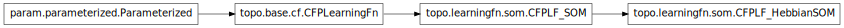

topo.learningfn.som¶

Module¶
SOM-based learning functions for CFProjections.
- class topo.learningfn.som.CFPLF_HebbianSOM(**params)[source]¶
Bases: topo.learningfn.som.CFPLF_SOM
Hebbian learning rule for CFProjections to Self-Organizing Maps.
This implementation is obsolete and will be removed soon. Please see examples/cfsom_or.ty for current SOM support.
- param Number learning_radius (allow_None=False, bounds=None, constant=False, default=0.0, inclusive_bounds=(True, True), instantiate=False, pickle_default_value=True, precedence=None, readonly=False)
- The radius of the neighborhood function to be used for learning. Typically, this value will be set by the Sheet or Projection owning this CFPLearningFn, but it can also be set explicitly by the user.
- param ClassSelector neighborhood_kernel_generator (allow_None=False, constant=False, default=<Gaussian Gaussian00258>, instantiate=True, pickle_default_value=True, precedence=None, readonly=False)
- Neighborhood function
- param Number crop_radius_multiplier (allow_None=False, bounds=None, constant=False, default=3.0, inclusive_bounds=(True, True), instantiate=False, pickle_default_value=True, precedence=None, readonly=False)
- Factor by which the radius should be multiplied, when deciding how far from the winner to keep updating the weights.
- class topo.learningfn.som.CFPLF_SOM(**params)[source]¶
Bases: topo.base.cf.CFPLearningFn
An abstract base class of learning functions for Self-Organizing Maps.
This implementation is obsolete and will be removed soon. Please see examples/cfsom_or.ty for current SOM support.
- param Number learning_radius (allow_None=False, bounds=None, constant=False, default=0.0, inclusive_bounds=(True, True), instantiate=False, pickle_default_value=True, precedence=None, readonly=False)
- The radius of the neighborhood function to be used for learning. Typically, this value will be set by the Sheet or Projection owning this CFPLearningFn, but it can also be set explicitly by the user.